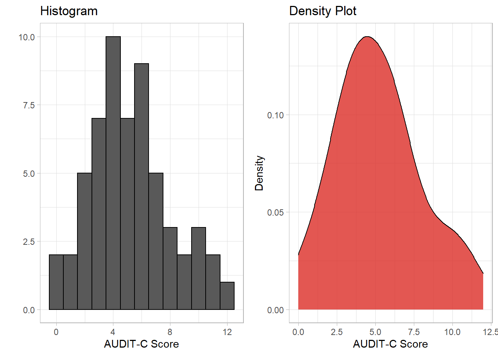
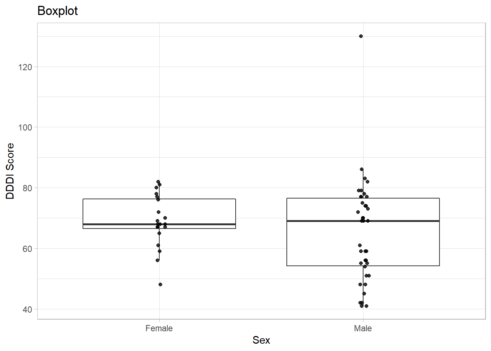
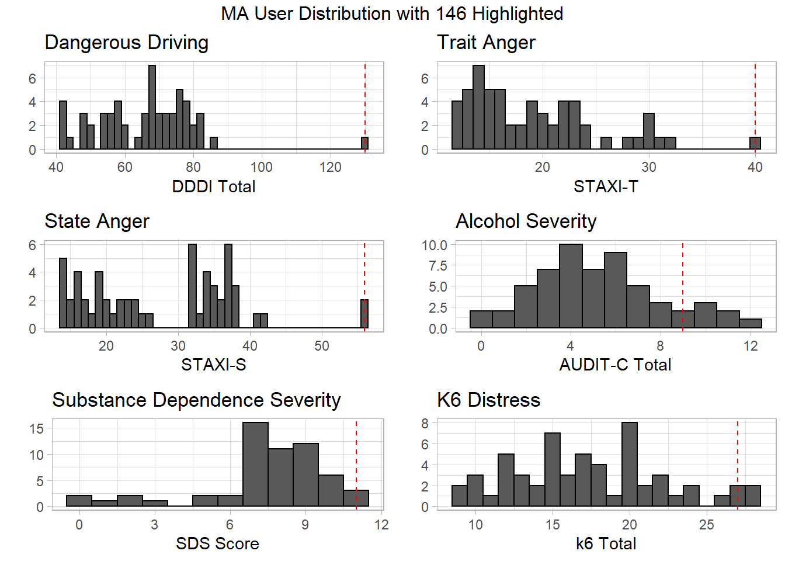

4 Analyses
4.1 Univariate Distributions
4.1.1 DDDI
| Overall (N=58) |
|
|---|---|
| DDDI Total | |
| Mean (SD) | 66.6 (14.8) |
| Median [Min, Max] | 68.5 [41.0, 130] |

4.1.2 Age
| Overall (N=58) |
|
|---|---|
| age | |
| Mean (SD) | 29.7 (6.11) |
| Median [Min, Max] | 29.0 [20.0, 48.0] |

4.1.3 Sex
| Overall (N=58) |
|
|---|---|
| sex | |
| Female | 20 (34.5%) |
| Male | 38 (65.5%) |
### Alcohol Use
| Overall (N=58) |
|
|---|---|
| AUDIT-C Score | |
| Mean (SD) | 5.22 (2.80) |
| Median [Min, Max] | 5.00 [0, 12.0] |

4.1.4 Substance Dependence Severity (SDS)
| Overall (N=58) |
|
|---|---|
| SDS Score | |
| Mean (SD) | 7.43 (2.51) |
| Median [Min, Max] | 8.00 [0, 11.0] |
4.1.5 Trait Anger
| Overall (N=58) |
|
|---|---|
| STAXI-T Total | |
| Mean (SD) | 19.3 (6.20) |
| Median [Min, Max] | 18.0 [12.0, 40.0] |
4.2 Bivariate Distributions
One entry (id = 146) was identified as having a DDDI score
4.2.1 Age
## # A tibble: 1 x 1
## PearsonR
## <dbl>
## 1 -0.332
4.2.2 Sex
## # A tibble: 2 x 4
## sex Mean SD Median
## <fct> <dbl> <dbl> <dbl>
## 1 Female 69.0 8.71 68
## 2 Male 65.4 17.2 69
4.2.3 Alcohol Use
## # A tibble: 1 x 1
## PearsonR
## <dbl>
## 1 0.448
4.2.4 SDS
## # A tibble: 1 x 1
## PearsonR
## <dbl>
## 1 0.4904.2.5 STAXI-T
## # A tibble: 1 x 1
## PearsonR
## <dbl>
## 1 0.5364.2.6 Correlation Matrix
| DDDI_Total | age | AUDIT_Total | meth_SDS | T_Ang_Total | |
|---|---|---|---|---|---|
| DDDI_Total | 1.00 | ||||
| age | -0.22*** | 1.00 | |||
| AUDIT_Total | 0.44*** | -0.10 | 1.00 | ||
| meth_SDS | 0.49*** | -0.39** | 0.32* | 1.00 | |
| T_Ang_Total | 0.65*** | -0.09 | 0.37*** | 0.19 | 1.00 |
4.3 Hierarchical Linear Regression Outline
A Hierarchical Linear Regression will be conducted to explore the relationship between MA use and Dangerous Driving Behaviour. We are particularly interested in whether Trait Anger (assessed with the STAXI) contributes to Dangerous Driving Behaviour in this cohort when controlling for demographics (age and sex) and Alcohol use (measured with the AUDIT-C) and Severity of MA use (measured using the SDS).
The HLR will be conducted with 3 models (aka blocks):
- \(DDDI = Intercept + Age + Sex\)
- \(DDDI = Intercept + Age + Sex + Alcohol + MA use\)
- \(DDDI = Intercept + Age + Sex + Alcohol + MA use + STAXI\)
4.4 Statistical Analysis
4.4.1 Building each linear model
m0 <- lm(DDDI_Total~1, data = ma) # Total SS
m1 <- lm(DDDI_Total~age + sex, data = ma) # Model 1 (demographics)
m2 <- lm(DDDI_Total~age + sex + AUDIT_Total + meth_SDS, data = ma) # Alcohol and MA use characteristics
m3 <- lm(DDDI_Total~age + sex + AUDIT_Total + meth_SDS + T_Ang_Total, data = ma) # STAXI4.4.2 Sums of Squares
Total SS
| Df | Sum Sq | Mean Sq | F value | Pr(>F) | |
|---|---|---|---|---|---|
| Residuals | 57 | 12531.4 | 219.8491 | NA | NA |
Model SS
| Res.Df | RSS | Df | Sum of Sq | F | Pr(>F) |
|---|---|---|---|---|---|
| 55 | 11126.850 | NA | NA | NA | NA |
| 53 | 8038.787 | 2 | 3088.062 | 12.91829 | 0.0000279 |
| 52 | 6215.190 | 1 | 1823.597 | 15.25731 | 0.0002721 |
The model with Alcohol and SDS accounts for an additional 3088.06 Sum of Squares over and above the model including age and gender and this change was statistically significant (p < .01). The \(R^2\) increased by 24.6% in model 2.
The model with Trait Anger accounts for an additional 1823.60 Sum of Squares controlling for demographics and alcohol/substance use and this too was statistically significant (p < .01). The \(R^2\) increased by 14.6%.
4.4.3 Model Summaries
Model 1
##
## Call:
## lm(formula = DDDI_Total ~ age + sex, data = ma)
##
## Residuals:
## Min 1Q Median 3Q Max
## -23.217 -9.725 -2.183 9.174 64.106
##
## Coefficients:
## Estimate Std. Error t value Pr(>|t|)
## (Intercept) 90.7628 9.3625 9.694 0.000000000000168 ***
## age -0.7818 0.3156 -2.477 0.0163 *
## sexMale -1.4139 4.0210 -0.352 0.7265
## ---
## Signif. codes: 0 '***' 0.001 '**' 0.01 '*' 0.05 '.' 0.1 ' ' 1
##
## Residual standard error: 14.22 on 55 degrees of freedom
## Multiple R-squared: 0.1121, Adjusted R-squared: 0.07979
## F-statistic: 3.471 on 2 and 55 DF, p-value: 0.03804Model 2
##
## Call:
## lm(formula = DDDI_Total ~ age + sex + AUDIT_Total + meth_SDS,
## data = ma)
##
## Residuals:
## Min 1Q Median 3Q Max
## -31.869 -6.899 0.273 5.901 50.099
##
## Coefficients:
## Estimate Std. Error t value Pr(>|t|)
## (Intercept) 52.3907 12.2043 4.293 0.0000754 ***
## age -0.3063 0.2957 -1.036 0.30501
## sexMale -0.9925 3.5173 -0.282 0.77890
## AUDIT_Total 1.7256 0.6142 2.810 0.00693 **
## meth_SDS 2.0145 0.7301 2.759 0.00793 **
## ---
## Signif. codes: 0 '***' 0.001 '**' 0.01 '*' 0.05 '.' 0.1 ' ' 1
##
## Residual standard error: 12.32 on 53 degrees of freedom
## Multiple R-squared: 0.3585, Adjusted R-squared: 0.3101
## F-statistic: 7.405 on 4 and 53 DF, p-value: 0.00008162Model 3
##
## Call:
## lm(formula = DDDI_Total ~ age + sex + AUDIT_Total + meth_SDS +
## T_Ang_Total, data = ma)
##
## Residuals:
## Min 1Q Median 3Q Max
## -25.100 -4.895 0.294 7.017 32.923
##
## Coefficients:
## Estimate Std. Error t value Pr(>|t|)
## (Intercept) 32.91881 11.92570 2.760 0.007957 **
## age -0.09415 0.26803 -0.351 0.726819
## sexMale -3.89796 3.20969 -1.214 0.230068
## AUDIT_Total 1.21691 0.56057 2.171 0.034531 *
## meth_SDS 1.79791 0.65044 2.764 0.007876 **
## T_Ang_Total 1.00379 0.25698 3.906 0.000272 ***
## ---
## Signif. codes: 0 '***' 0.001 '**' 0.01 '*' 0.05 '.' 0.1 ' ' 1
##
## Residual standard error: 10.93 on 52 degrees of freedom
## Multiple R-squared: 0.504, Adjusted R-squared: 0.4563
## F-statistic: 10.57 on 5 and 52 DF, p-value: 0.0000004884.4.4 Removing non-significant variables
4.4.4.1 Model 2
m2.rm <- lm(DDDI_Total ~ age + AUDIT_Total + meth_SDS, data = ma)
summary(m2.rm)##
## Call:
## lm(formula = DDDI_Total ~ age + AUDIT_Total + meth_SDS, data = ma)
##
## Residuals:
## Min 1Q Median 3Q Max
## -32.250 -6.900 0.186 5.988 49.729
##
## Coefficients:
## Estimate Std. Error t value Pr(>|t|)
## (Intercept) 52.0408 12.0372 4.323 0.0000666 ***
## age -0.3201 0.2891 -1.107 0.27312
## AUDIT_Total 1.7096 0.6063 2.820 0.00671 **
## meth_SDS 2.0406 0.7180 2.842 0.00631 **
## ---
## Signif. codes: 0 '***' 0.001 '**' 0.01 '*' 0.05 '.' 0.1 ' ' 1
##
## Residual standard error: 12.21 on 54 degrees of freedom
## Multiple R-squared: 0.3575, Adjusted R-squared: 0.3219
## F-statistic: 10.02 on 3 and 54 DF, p-value: 0.000023764.4.4.2 Model 3
##
## Call:
## lm(formula = DDDI_Total ~ AUDIT_Total + meth_SDS + T_Ang_Total,
## data = ma)
##
## Residuals:
## Min 1Q Median 3Q Max
## -26.679 -5.732 1.618 7.426 31.661
##
## Coefficients:
## Estimate Std. Error t value Pr(>|t|)
## (Intercept) 26.6669 5.8876 4.529 0.0000331 ***
## AUDIT_Total 1.2134 0.5586 2.172 0.034243 *
## meth_SDS 2.0449 0.6044 3.383 0.001339 **
## T_Ang_Total 0.9564 0.2463 3.883 0.000283 ***
## ---
## Signif. codes: 0 '***' 0.001 '**' 0.01 '*' 0.05 '.' 0.1 ' ' 1
##
## Residual standard error: 10.92 on 54 degrees of freedom
## Multiple R-squared: 0.4864, Adjusted R-squared: 0.4578
## F-statistic: 17.05 on 3 and 54 DF, p-value: 0.0000000654.5 Assumptions
4.5.1 Plot of Residuals
4.5.2 Colinearity (model 3)
All Variables
tibble(Variable = c("Age", "Sex", "AUDIT-C", "SDS", "STAXI-T"),
VIF = vif(m3))## # A tibble: 5 x 2
## Variable VIF
## <chr> <dbl>
## 1 Age 1.28
## 2 Sex 1.13
## 3 AUDIT-C 1.17
## 4 SDS 1.28
## 5 STAXI-T 1.21Removed Variables
tibble(Variable = c("AUDIT-C", "SDS", "STAXI-T"),
VIF = vif(m3.rm))## # A tibble: 3 x 2
## Variable VIF
## <chr> <dbl>
## 1 AUDIT-C 1.17
## 2 SDS 1.10
## 3 STAXI-T 1.11apa.reg.table(m3)##
##
## Regression results using DDDI_Total as the criterion
##
##
## Predictor b b_95%_CI sr2 sr2_95%_CI Fit
## (Intercept) 32.92** [8.99, 56.85]
## age -0.09 [-0.63, 0.44] .00 [-.01, .01]
## sexMale -3.90 [-10.34, 2.54] .01 [-.03, .06]
## AUDIT_Total 1.22* [0.09, 2.34] .04 [-.03, .12]
## meth_SDS 1.80** [0.49, 3.10] .07 [-.02, .17]
## T_Ang_Total 1.00** [0.49, 1.52] .15 [.01, .28]
## R2 = .504**
## 95% CI[.26,.60]
##
##
## Note. A significant b-weight indicates the semi-partial correlation is also significant.
## b represents unstandardized regression weights.
## sr2 represents the semi-partial correlation squared.
## Square brackets are used to enclose the lower and upper limits of a confidence interval.
## * indicates p < .05. ** indicates p < .01.
## 4.5.3 Homogeneity
All Variables
Removed Variables
4.5.4 Linearity
All Variables
Removed Variables
4.5.5 Normality of Residuals
All Variables
Removed Variables

4.5.6 Outliers
Residual Standard Deviation
Cooks D
Mahalinobis Distance
| index | mahal | p |
|---|---|---|
| 1 | 10.148058 | 0.0380062 |
| 13 | 13.439610 | 0.0093161 |
| 40 | 11.997836 | 0.0173674 |
| 42 | 9.862643 | 0.0428061 |
| 46 | 10.344494 | 0.0350078 |
There are 3 points that have been identified as being potentially influential to the regression model. One of these is a clear outlier with a Cooks D of 0.69. The index numbers and their respective id numbers are as follows:
outliers <- tibble(Index = c(13, 46, 50),
ID = c(146, 233, 237),
CooksD = c(0.69, 0.11, 0.16)
)
outliers %>% kable() %>% kable_styling()| Index | ID | CooksD |
|---|---|---|
| 13 | 146 | 0.69 |
| 46 | 233 | 0.11 |
| 50 | 237 | 0.16 |
The most influential outlier comes from participant ID 146 who reported a DDDI score of 130 (the next highest score being 86). This participant also demonstrated the highest Trait Anger score (a score of 40/40 - within 4 SDs of the mean) and demonstrated the highest score (with one other participant) in State anger with a score of 56/56 (within 3 SDs of the mean) . They demonstrated high Psychological distress with a k6 score of 27/30, had a reasonably high (though not abnormal) AUDIT-C score of 9/12 and scored an SDS of 11/15.
Digging Deeper
ID: 146
